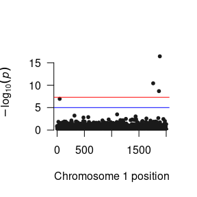
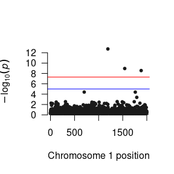
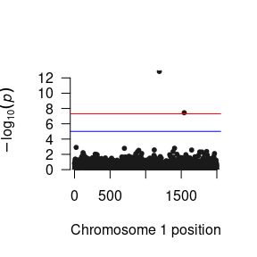
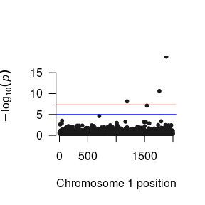

Gene-environment interaction (GxE) studies are incredibly popular methods to explore the potential for varying levels of genetic sensitivity in different environments. On a broad level, antecedents and consequences that make specific genetic variants differentially sensitive to environmental stimuli inform numerous phenomena, such as evolutionary pressures and epigenetic effects.
Example
To demonstrate how to conduct a GxE GWAS using GW-SEM, we use simulated data for a one factor GWAS model with 6,000 individuals consisting of 2,000 SNPs, three correlated items and 6 covariates (that are a proxy for age, sex, ancestry principle components or other confounds). We simulated similar data that we use in this demonstration.
The first step is opening R, and loading the GW-SEM package as well as the phenotypic data (including the dependent variable, the moderating/interacting variable and any covariates such as age, sex, or ancestry principle components) into the R computing environment. This can be achieved by using the command below:
library(gwsem)
#> Loading required package: OpenMx
#> To take full advantage of multiple cores, use:
#> mxOption(key='Number of Threads', value=parallel::detectCores()) #now
#> Sys.setenv(OMP_NUM_THREADS=parallel::detectCores()) #before library(OpenMx)
#>
#> Attaching package: 'gwsem'
#> The following object is masked from 'package:base':
#>
#> signif
location <- 'https://jpritikin.github.io/gwsem/gwsemGxEexample'
# Read the phenotype data into R and look at the data
gxeData <- read.table(file.path(location, "gxeData.txt"), header=TRUE)Once the data are loaded into R, you can recode the data, transform it, and tell R if we have ordinal or binary indicators using mxFactor(). The data for this example are simulated and continuous, and therefore, we will not be doing anything now, but if you would like to chop the indicators up into binary or ordinal variables, this is when you would do it. It is possible to conduct GxE analyses on binary or ordinal variables. With GW-SEM we assume that the binary or ordinal variable follows the Liability-Threshold Model (where the observed categories reflect portions of the underlying liability distribution).
Once you are satisfied the data are in the appropriate shape we can build a one factor GWAS model with the following command:
gxe <- buildItem(phenoData = gxeData, depVar = "phe",
covariates = c("mod", "pc1", "pc2", "pc3", "pc4","pc5"),
fitfun = "WLS", exogenous = T, gxe = "mod")There are a few differences in how the GxE GWAS is specified relative to the standard GWAS even though both models use the buildItem function. We must add the gxe argument which tells GW-SEM that we want to conduct a GxE GWAS and which variable is the moderator. By doing so, when GW-SEM reads in the GWAS data in the C++ backend, it will automatically create a multiplicative interaction variable. This newly created variable name will be named “snp” with your specific variable name appended to it, separated by an underscore. In the current example, our moderating variable is named “mod” and therefore the interaction term is named “snp_mod”. If your variable name was “environment” then the interaction term would be labeled “snp_environment”. It is strongly suggested that you use the exogenous = T argument. Otherwise, the standard errors of the interaction component tend to be substantially higher than those in comparable OLS regression models.
After you have built the gxe model and put it into an object (named gxe), you can take this object which is technically an OpenMx model, and fit it using mxRun()
gxeFit <- mxRun(gxe)
#> Running OneItem with 10 parameters
summary(gxeFit)
#> Summary of OneItem
#>
#> free parameters:
#> name matrix row col Estimate Std.Error lbound ubound
#> 1 snp_to_phe A phe snp -0.019316805 0.01904670
#> 2 snp_mod_to_phe A phe snp_mod 0.005249091 0.01895707
#> 3 mod_to_phe A phe mod 0.594531938 0.02388917
#> 4 pc1_to_phe A phe pc1 0.003312367 0.01289688
#> 5 pc2_to_phe A phe pc2 0.011413006 0.01324115
#> 6 pc3_to_phe A phe pc3 -0.006008539 0.01279708
#> 7 pc4_to_phe A phe pc4 -0.001558988 0.01328073
#> 8 pc5_to_phe A phe pc5 0.004094683 0.01350114
#> 9 phe_res S phe phe 1.035354322 0.01898768 0.001
#> 10 pheMean M 1 phe 0.549317812 0.04078261
#>
#> Model Statistics:
#> | Parameters | Degrees of Freedom | Fit (r'Wr units)
#> Model: 10 5990 1.4852e-27
#> Saturated: 2 5998 0.0000e+00
#> Independence: 2 5998 NA
#> Number of observations/statistics: 6000/6000
#>
#> chi-square: χ² ( df=0 ) = 0, p = 1
#> CFI: NA
#> TLI: 1 (also known as NNFI)
#> RMSEA: 0 [95% CI (NA, NA)]
#> Prob(RMSEA <= 0.05): NA
#> To get additional fit indices, see help(mxRefModels)
#> timestamp: 2020-07-11 12:24:17
#> Wall clock time: 0.515142 secs
#> optimizer: SLSQP
#> OpenMx version number: 2.17.4
#> Need help? See help(mxSummary)It is strongly advised to test out the model, as it is a great time to make sure that your model is specified as expected. Provided that the model looks reasonable, you can pass the model into the GWAS function,
library(curl)
curl_download(file.path(location, 'example.pgen'),
file.path(tempdir(),'example.pgen'))
curl_download(file.path(location, 'example.pvar'),
file.path(tempdir(),'example.pvar'))
GWAS(model = gxe, # the model object
snpData = file.path(tempdir(), 'example.pgen'), # the path to the snpData
out=file.path(tempdir(), "gxe.log")) # the results file name
#> Running OneItem with 10 parameters
#> Done. See '/tmp/RtmpHnQY2B/gxe.log' for resultsWhen you execute this command, you will begin running your GWAS.
After you finish running the GWAS analysis, the next step is to read the results into R so that you can examine them, plot them, prepare them for used by other software packages, etc. While you are unlikely to want to read all of the output into R, it is useful to do this on a small test GWAS analysis to ensure that you are getting reasonable results. To do so, you can use the base R function read.delim. This is didactically useful, but it contains much more information than most people want
More reasonably, we will want to examine the results for a specific parameter using the loadResults function. This function takes takes two arguments: the path to the data and the column name from the results file for the parameter that you want to examine. Once the summary statistics have been read into R, it is possible to manipulate the results using standard R commands, such as sorting the results by Z-statistics or P-values, as shown below:
lr <- loadResults(path = file.path(tempdir(), "gxe.log"), focus = c("snp_to_phe", "snp_mod_to_phe"))
succinctCond <- signif(lr, "snp_to_phe")
succinctInt <- signif(lr, "snp_mod_to_phe")
head(succinctCond[order(succinctCond$Z, decreasing = T),])
#> MxComputeLoop1 CHR BP SNP A1 A2 statusCode catch1 snp_to_phe
#> 1: 1884 1 1883 snp1883 B A OK NA 0.18781103
#> 2: 1762 1 1761 snp1761 A B OK NA 0.14568878
#> 3: 1868 1 1867 snp1867 A B OK NA 0.12841686
#> 4: 48 1 47 snp47 A B OK NA 0.11862335
#> 5: 1101 1 1100 snp1100 A B OK NA 0.08049730
#> 6: 319 1 318 snp318 A B OK NA 0.07681582
#> snp_mod_to_phe Vsnp_to_phe:snp_to_phe Vsnp_mod_to_phe:snp_mod_to_phe
#> 1: 0.131664012 0.0004968010 0.0004906852
#> 2: 0.090479042 0.0004853252 0.0004858684
#> 3: 0.004175710 0.0004595031 0.0004469476
#> 4: 0.029088623 0.0004997281 0.0004998344
#> 5: -0.004278833 0.0005016595 0.0004887322
#> 6: -0.025794073 0.0005022668 0.0005077531
#> Vsnp_mod_to_phe:snp_to_phe Z P
#> 1: 5.606327e-06 8.426164 3.571827e-17
#> 2: -8.634754e-06 6.613170 3.761772e-11
#> 3: -1.380366e-05 5.990703 2.089354e-09
#> 4: -1.980735e-05 5.306441 1.117866e-07
#> 5: -8.432265e-06 3.593989 3.256532e-04
#> 6: -9.825706e-06 3.427547 6.090603e-04
head(succinctInt[order(succinctInt$Z, decreasing = T),])
#> MxComputeLoop1 CHR BP SNP A1 A2 statusCode catch1 snp_to_phe
#> 1: 1193 1 1192 snp1192 B A OK NA -0.048245290
#> 2: 1543 1 1542 snp1542 A B OK NA -0.005342773
#> 3: 1884 1 1883 snp1883 B A OK NA 0.187811032
#> 4: 1762 1 1761 snp1761 A B OK NA 0.145688775
#> 5: 1740 1 1739 snp1739 B A OK NA 0.010958018
#> 6: 121 1 120 snp120 A B OK NA -0.008776884
#> snp_mod_to_phe Vsnp_to_phe:snp_to_phe Vsnp_mod_to_phe:snp_mod_to_phe
#> 1: 0.16725676 0.0004992567 0.0005166096
#> 2: 0.13308471 0.0004841774 0.0004773395
#> 3: 0.13166401 0.0004968010 0.0004906852
#> 4: 0.09047904 0.0004853252 0.0004858684
#> 5: 0.06612425 0.0004965692 0.0004938025
#> 6: 0.06610067 0.0004910111 0.0005097482
#> Vsnp_mod_to_phe:snp_to_phe Z P
#> 1: -2.876329e-05 7.358723 1.856776e-13
#> 2: -8.768652e-06 6.091363 1.119537e-09
#> 3: 5.606327e-06 5.943819 2.784567e-09
#> 4: -8.634754e-06 4.104768 4.047203e-05
#> 5: -1.862992e-05 2.975666 2.923534e-03
#> 6: -2.740316e-05 2.927710 3.414685e-03We can also read in the marginal effects for a specific level of the environment, as well as their standard errors, z-statistics, and p-values. To do this, we can use the loadResults command and specify the moderatorLevel argument with a numerical value. In the current case, the standard deviation of the moderator variable is 1, by using values of -2 and 2, we are asking GW-SEM to provide the marginal effects for 2 standard deviations below and above the means. While any value of the moderator can be requested, we would suggest using reasonable values of the moderating variable.
margLow <- signifGxE(lr, focus = "snp_mod_to_phe", level= -2)
margHigh <- signifGxE(lr, focus = "snp_mod_to_phe", level= 2)Now that we have the various components that contribute to our GxE GWAS model, we can begin constructing Manhattan plots for the relevant parameters.
# Manhattan Plots for directly estimated parameters
plot(succinctCond) # To plot p-values of the conditional effect

# Manhattan Plots for marginal effects
plot(margLow) # To plot p-values for a low level (-2SD) of the moderator

As GxE GWAS methods are under-utilized in the literature, consensus about how these results should be presented is developing. When interpreting and presenting the results, therefore, it is imperative that the each specific parameter is interpreted correctly. For example, while most people call the parameter from the SNP to the phenotype the “Main Effect”, it is better thought of as a conditional effect as strictly speaking it is the association between the SNP and the phenotype under the specific condition where the environment is equal to zero and not the average effect of the SNP across all levels of the environment as would be implied by the term main effect. By contrast, the interaction parameter is the difference in the SNP association between when the environment is equal to zero and when the environment is equal to one.
An alternative, and preferable, interpretation of the GxE GWAS model is to calculate what we call Marginal Effects (or Simple Slopes). This is done automatically by GW-SEM using the TODO functions. Marginal effects can be interpreted as the GWAS coefficients at a particular level of the environment. For example, if the moderator is binary (e.g., for sex) we could calculate the GWAS results for either Males (sex = 0) or females (sex = 1). Alternatively, if the moderator is continuous (e.g.,, age) we might want to calculate the GWAS results for a low level of the moderator (2 SD below the moderator mean) and a high level of the moderator (2 SD above the moderator mean), or at some other particularly relevant value. Notably, while the calculation of marginal effects is an additional step in the analytical process (that GW-SEM does automatically), marginal effects are often more interpretable than either the conditional or interaction parameters, as well as being more closely related to the hypothesis that the analyst is trying to test.